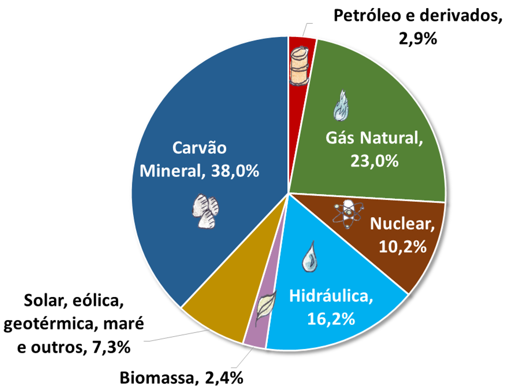

A matriz elétrica é um conjunto de fontes de energia utilizadas para a produção de energia elétrica.
Fontes de energia são instrumentos ou recursos que podem transformar ou serem transformados em energia, elas podem ser de fontes renováveis ou não renováveis.
As fontes renováveis são aquelas que não se esgotam ou que podem ser reaproveitadas e as fontes não renováveis são aquelas que irão se esgotar.
Sinta-se livre para navegar pelo site.